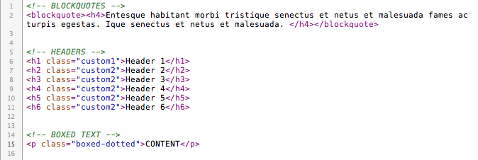
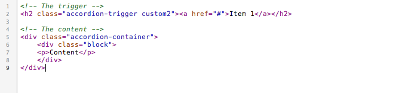

“Watercolor” Documentation by “ansimuz v1.0
“WATERCOLOR TEMPLATE”
Created: 6/16/2010
By: Luis Zuno aka ansimuz
Email: luis@luiszuno.com
Thank you for downloading my theme. If you like this file you may like some of my premium items found on themeforest portfolio Visit portfolio. Thanks so much!
Table of Contents
A) HTML Structure - top
A-1) GENERAL
This theme is a fixed layout with 4 different skins (spring, summer,autumn and winter). All of the information within the main content area is nested within a div with an id of "main". The navigation logo and search form are nested in the div named "header" and the site map and legal contnent is nested in the div named "footer".
The major blocks this layout is divided are:
- Header
- Main
- Footer
The Header and Main blocks are inside a wrapper div to keep them centered. The footter has its internal wrapper. Main is the block that changes from module to module.
A-2) INDEX.HTML
This is your home and you can put any number of images in the slideshow also you can have any number of blocks of info at the bottom. Inside the Main block you'll find these major blocks:
- Slideshow.
- Holder (holds the blocks)
A-2) ABOUT.HTML
This html file is used for common pages. You can set a big image at the top (slide show optional).
- Slideshow.
- Holder
A-2-1) Columns
You can set the 1,2 or three columns. You need to nest the col divs inside a div (one-col, two-col or three-col). The separator is optional to have a horizontal line at the end of the block.
Don't forget to put the last class in the last div. eg.
<div class="col last">
ONE COLUMN
TWO COLUMNS
A-2-2) Image alignment
You can left or right align an image next to a text putting a class inside the img tag. The boxed is optional to have a border around the image.
For left use: left-align
For right use: right-align
A-2-3) Styled text
Set style to text using classes. For special fonts (using cufon) you need to include an additional class custom.
Boxed text styles:
- class="boxed-dotted"
- class="boxed-dashed"
- class="boxed-important"
- class="boxed-blue"

A-2-4) UL and OL
Is simple just add the class="list" to the <ol> or the <ul> tag.
A-2-5)Toggle and Accordion boxes
This template includes a simple way to make toggle and accordion boxes using the magic of Jquery.
To make a text block toggle/accordion(able) you need the following coding structure:
For the toggle box
A trigger link
<h2 class="toggle-trigger custom"><a href="#">Toggle Switch</a></h2> and a div block nested inside a container block div.
<div class="toggle-container">
<div class="block">
<p>Content</p>
</div>
</div>

For the accordion box
A trigger link
<h2 class="accordion-trigger custom"><a href="#">Accordion Switch</a></h2> and a div block nested inside a container block div.
<div class="accordion-container">
<div class="block">
<p>Content</p>
</div>
</div>

A-3) GALLERY.HTML
The gallery.html file is designed to contain any number of thumbnails for image, video or flash files that also are filtarable.
The major div blocks on this file are:
- Flter
- Thumbs
- Pager
- More-galleries
A-3-1) Filter
This is used to filter the thumbnails. The selector used is an <ul> tag with a id of portfolio-filterfor each filter link you add a <li> element with a <a> element and a href anchor value.
For example to filter all the cat-images <li> elements from the portfolio-list <ul> the href of that link would be href="#cat-images"
Structure:

More info at the author of this js library here.
A-3-2) Thumbnails
The thumbnails are contained in a ul with an id named portfolio-list and for each thumbnail you need to create a li element. Use the class from the li to make it filterable (cat-images in this example).
example:
A-3-3) The pager
This ul is a list of links in the form of buttons. Its very simple. For each link just add a li element. You can set it active with the class active.
example:
A-4) BLOG.HTML
This file contains 2 major divs the one for the left content (the posts list) and the right content (the sidebar).
Major blocks:
- posts
- sidebar
Inside the div posts you can add any number of post divs.
e.g.
<div id="posts">
<div class="">CONTENT NOT SHOWN</div> <div class="">CONTENT NOT SHOWN</div> <div class="">CONTENT NOT SHOWN</div>
</div>
As for the sidebar you can set any number of blocks for navigation menus.
Use side-block <ul> element for normal navigation
or
side-posts for thumbnail navigation.
Structure:
A-5) SINGLE.HTML
This file contains 2 major divs the one for the left content (the posts list) and the right content (the sidebar) same as the blog.html. The main difference is that this has 2 important blocks nested inside the post div.
Major blocks:
- posts
- single
- comments
- leave-comment
- sidebar
A-5-1) Single div
This block contains the content of the post.
A-5-2) comments div
This block contains the list of comments.
A-5-3) Single div
This block contains the form to post a comment, It is linked to a js file (post-validation.js) to validate the required fields.
A-6) CONTACT.HTML
This file contains 2 major divs the one for the left content and the right content. The left content contains the form linked to a validion javascript (js/form-validation.js) and the right content just contains data and an image map.
Major blocks:
- contact-left
- contact-right
B) CSS Files and Structure - top
I'm using 6 CSS files in this theme. One for reset (reset.css). One for general styles (style.css). One for IE 6 hacking (if-hacks.css) and 4 for the skin (spring summer, autumn and winter.css).
Changing the skin:
To change the skin just change the path of the second .css file on the head tag of the file.

File structure:
and superfish-custom.css
The only one discussed in this document is the style.css cause it contains all major styling for the template. It is divided by content heres the list:
- IMPORTS ---------------- imports additional css files
- HACKS ------------------- some common hacks
- GENERAL ---------------- Headings, text format and links
- HEADER ------------------ The top part of the tamplate
- ARROW -------------------- the active arrow from the navigation
- NAV ------------------------- navigation rules
- SEARCH -------------------- search form
- MAIN ------------------------- The main content
- COLUMNS
------------------- columns rules
- SLIDESHOW ------------------ slideshow style
- FADE-SLIDE
------------------- slide style
- GALLERY ----------------------- gallery.html styles
- BLOG PAGER ------------------ blog style
- PAGER ---------------------------- blog pager style
- BLOG ----------------------------- blog.html styles
- SINGLE --------------------------- single.html style
- COMMENTS ---------------------- blog comments style
- SIDEBAR -------------------------- sidebar rules
- CONTACT -------------------------- contact.html styles
- FORMS ------------------------------ from rules
- FONT STYLES --------------------- sont styles
- FOOTER ----------------------------- bottom part of the template styles
- TOGGLE & ACCORDION -------- box rules
C) JavaScript - top
This theme imports 14 Javascript files 9 from 3rd party 3 files from me and 2 files for the font files.
3rd Party js files
- jquery_1.3.2.js
- cufon-yui.js
- prettyPhoto
- DD_belatedPNG.js
- filterable.pack.js
- jquery_cycle.js
- jquery.cycle.all.js
- jqueryui.js
- easing.js
- superfish.js
Home made js files
- custom.js
- form-validation.js
- post-validation.js
Font js files
- bebas_400.font.js
3rd party description
- jQuery is a Javascript library that greatly reduces the amount of code that you must write. Jquery home page.
- Cufón aims to become a worthy alternative to sIFR, which despite its merits still remains painfully tricky to set up and use. Cufon home page.
- PrettyPhoto is a jQuery based lightbox clone. Not only does it support images, it also add support for videos, flash, YouTube, iFrames. It’s a full blown media lightbox. The setup is easy and quick, plus the script is compatible in every major browser. Prettyphto home page.
- DD_belatedPNG This is a Javascript library that sandwiches PNG image support into IE6 without much fuss. DD_belatedPNG home page.
- filterable.pack.js This plug in allows you to filter the thumbnails content Filterable Home page
- jquery_cycle TThe jQuery Cycle Plugin is a slideshow plugin that supports many different types of transition effects. It supports pause-on-hover, auto-stop, auto-fit, before/after callbacks, click triggers and much more. It also supports, but does not require, the Metadata Plugin and the Easing Plugin. Jquery Cycle Home page
- Jquery cycle all see above.
- jqueryui provides abstractions for low-level interaction and animation, advanced effects and high-level, themeable widgets, built on top of the jQuery JavaScript Library, that you can use to build highly interactive web applications. Jquery ui Home page.
- jQuery Easing Plugin A jQuery plugin from GSGD to give advanced easing options. Easing Home page
- Superfish Query plugin that takes an existing pure CSS drop-down menu. Superfish Home page
Home made js files
- Custom.js This contains the code for the slideshow and blog navigation rollovers.
- Form-validation.js and post-validation.js This is the
javascript validation for the fields.

Font js files
- bebas_400.font.js This is a free font you can download it here.
D) PSD Files - top
I've included three psds with this theme:
- watercolor-theme.psd
- watercolor-bg.psd
- toggle-button.psd
- over.psd
watercolor-theme.psd
This psd file contains the general visuals for the theme, it contains
4 main groups:
- Main (contains the general elements and content)
- Header (contains the navigation and search form)
- Footer (contains the boottom part of the template)
- and BG(Contains the background images)
watercolor-bg.psd
This psd file contains the 4 different background skins.
toggle-button.psd
This psd file contains editable toggle button file.
E) Sources and Credits - top
I've used the following images, icons or other files as listed.
- jQuery home page.
- Cufón Home page.
- PrettyPhoto Home page.
- DD_belatedPNG Home page.
- filterable.pack.js Home page
- jquery_cycle Home page
- jqueryui . Jquery ui Home page.
- jQuery Easing Plugin Home page
- Bebas font Author.
- Superfish Author
- Image assets used Envato's assets library home page.
Once again, thank you for downloading this free file. I don't offer support on freebies however you can always look for help at http://luiszuno.com/free-forums/
ansimuz